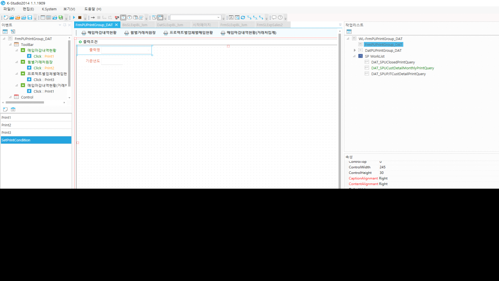

콤보 값에 따라 툴바 숨기기
if cmbPrintName.Value == '2100020001' then
GetToolbar('Print1').EventArgs.Visible = true
GetToolbar('Print2').EventArgs.Visible = false
GetToolbar('Print3').EventArgs.Visible = false
GetToolbar('Print4').EventArgs.Visible = false
datStdDate.ControlKey = 'NOQ;'
datStdYM.ControlKey = 'DIS;HID;'
elseif cmbPrintName.Value == '2100020002' then
GetToolbar('Print1').EventArgs.Visible = false
GetToolbar('Print2').EventArgs.Visible = true
GetToolbar('Print3').EventArgs.Visible = false
GetToolbar('Print4').EventArgs.Visible = false
datStdDate.ControlKey = 'DIS;HID;'
datStdYM.ControlKey = 'NOQ;'
elseif cmbPrintName.Value == '2100020003' then
GetToolbar('Print1').EventArgs.Visible = false
GetToolbar('Print2').EventArgs.Visible = false
GetToolbar('Print3').EventArgs.Visible = true
GetToolbar('Print4').EventArgs.Visible = false
datStdDate.ControlKey = 'NOQ;'
datStdYM.ControlKey = 'DIS;HID;'
elseif cmbPrintName.Value == '2100020004' then
GetToolbar('Print1').EventArgs.Visible = false
GetToolbar('Print2').EventArgs.Visible = false
GetToolbar('Print3').EventArgs.Visible = false
GetToolbar('Print4').EventArgs.Visible = true
datStdDate.ControlKey = 'NOQ;'
datStdYM.ControlKey = 'DIS;HID;'
end
FrmPUPrintGroup_DAT
매입출력물모음_dat
